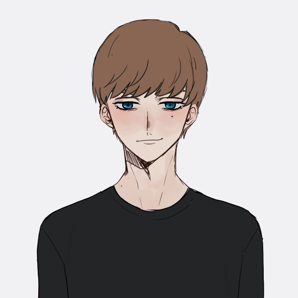

Bienvenidos a mi Portfolio

Santiago Airaudo
- Datos Academicos:
Realicé los 7 años de Primaria en la escuela "Manuel Belgrano". Asistí a la secundaria técnica "Guillermo Lehmann" por 6 años, en la especialidad de Informática.
Actualmente estoy en mi segundo año de mi carrera, Producción de Videojuegos y Entretenimiento Digital, en la Universidad Nacional de Rafaela.
- Datos personales:
Mis pasatiempos son jugar videojuegos, mirar anime/manga y hacer deporte, más precisamente el Voleiobol, en el club 9 de Julio. Mi genero de videojuegos favorito son los de plataforma - aventura.
Mis favoritos del genero son: Figment, Gris, Night in the Woods, y más.
- Links de los trabajos prácticos:
-
Ejercicios en JavaScript
- Recolector de Estrellas